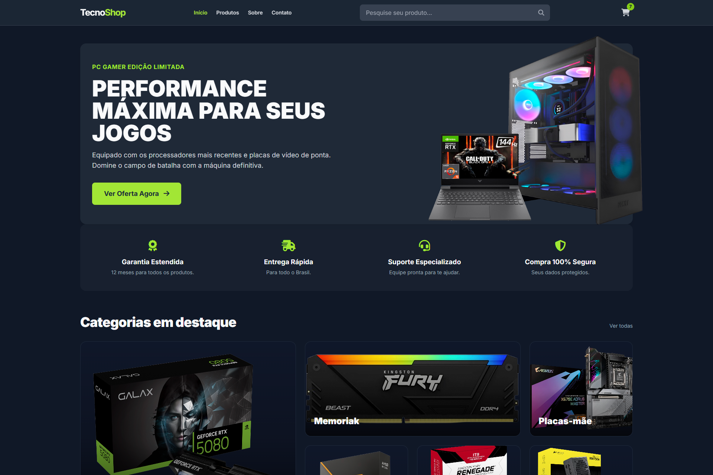
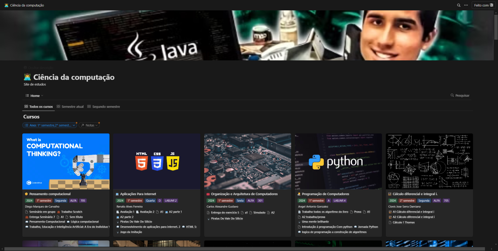
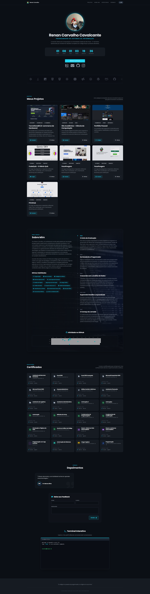
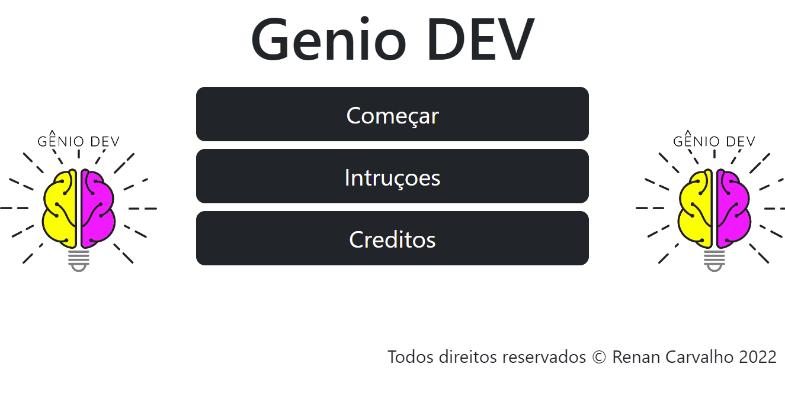
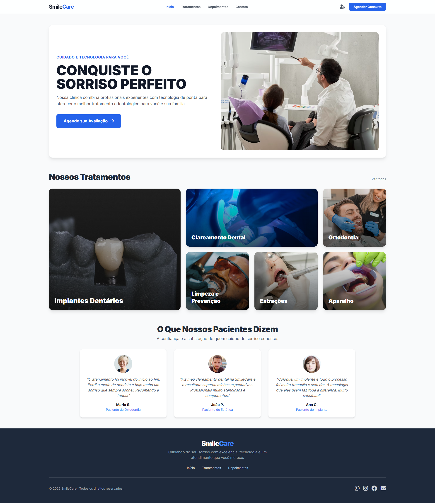
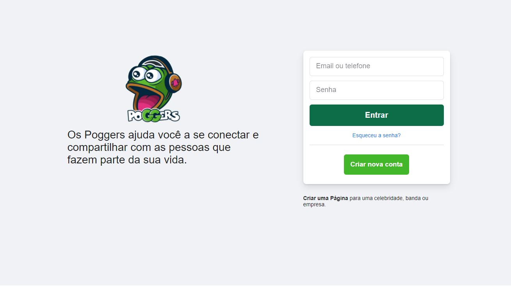

Renan Carvalho Cavalcante
Programador de sistemas de informação
Cursando Ciência da Computação na Universidade Cidade de São Paulo – 5° semestre. Apaixonado por transformar desafios complexos em código limpo e produtos eficientes.
Portfólio
Meus Projetos
Uma seleção de desafios técnicos transformados em soluções funcionais e escaláveis.




CodeQuiz - O Gênio Quiz
Uma aplicação web interativa inspirada no clássico Gênio Quiz, mas totalmente adaptada para o universo dev. O jogo de perguntas e respostas focado em lógica de programação, contando com validação em tempo real e interface responsiva.



Minha Jornada
Sobre Mim
Sou Renan Carvalho, um profissional movido pela paixão por tecnologia, programação e pela busca constante por soluções inovadoras. Com uma sólida vivência em administração de sistemas ERP, destaco-me no suporte técnico a usuários, na criação e otimização de regras de negócio complexas e no gerenciamento eficiente de infraestruturas. Minha abordagem de trabalho é fundamentada na união entre análise técnica rigorosa, criatividade na resolução de problemas e uma atenção minuciosa aos detalhes, garantindo eficiência e resultados consistentes em projetos desafiadores.
Quando não estou imerso em linhas de código, gosto de exercitar a mente com jogos de estratégia e competitivos, além de resolver enigmas lógicos. Valorizo o equilíbrio recarregando as energias praticando esportes ao ar livre e aproveitando momentos de qualidade com amigos e familiares. Também sou um leitor assíduo, explorando continuamente conteúdos sobre ciência, lógica e novas tecnologias.
Minhas Habilidades
O Início da Graduação
Dei mais um passo importante na minha trajetória ao ingressar na graduação de Ciência da Computação na Universidade Cidade de São Paulo. Estou aplicando meus conhecimentos em áreas mais complexas, como inteligência artificial e segurança da informação, desenvolvendo projetos que contribuem para o meu crescimento acadêmico e profissional.
De Estudante a Programador
Minhas habilidades foram reconhecidas e atuei como programador em uma empresa de hardware. Fui responsável por desenvolver e manter sistemas de informação de forma eficiente, uma experiência que me ensinou a importância da colaboração em equipe e me proporcionou uma imersão prática inestimável no desenvolvimento de software.
Crescendo com a Análise de Dados
Trabalhei como entregador para complementar a renda enquanto me aprofundava em análise de dados. Fiz cursos focados em Power BI e Excel, criando dashboards e análises que me ajudaram a entender o impacto real dos dados no mundo dos negócios, mantendo sempre o foco no crescimento contínuo da minha carreira.
Superando Desafios e Aprendendo
Durante a pandemia, busquei crescer apesar das adversidades. Estudei para o ENEM e abri um pequeno negócio de impressão, uma fase difícil que me ensinou resiliência. Paralelamente, mergulhei nos estudos de programação, conectando-me com minha verdadeira paixão: desenvolver soluções digitais.
O Começo da Jornada
Fui selecionado para participar da Estação Hack do Facebook. Esse programa incrível me apresentou ao universo da programação, onde entendi o poder de criar algo do zero e as possibilidades infinitas da construção digital. Foi o momento que acendeu minha paixão irreversível por tecnologia.
Atividade no GitHub
Qualificações
Certificados
Cursos e certificações que comprovam meu conhecimento técnico e aprimoramento contínuo.
Assistente de Recursos Humanos
Fundação Paulistana
Excel 2010
Fundação Paulistana
Excel 2010 Avançado
Fundação Paulistana
Microsoft PowerPoint 2010
Fundação Paulistana
Microsoft Word 2010
Fundação Paulistana
Empreendedorismo
Fundação Paulistana
Mídias Sociais & Métricas
Fundação Paulistana
Assistente Financeiro
Fundação Paulistana
Assistente de Logística
Fundação Paulistana
Assistente Administrativo
Fundação Paulistana
Animações II
Grasshopper da Google
Animações
Grasshopper da Google
Automação
Grasshopper da Google
Métodos de Array
Grasshopper da Google
Fundamentos de Programação II
Grasshopper da Google
Fundamentos de Codificação
Grasshopper da Google
Introdução a Páginas da Web
Grasshopper da Google
Uso de um Editor de Código
Grasshopper da Google
Desenv. Sistemas Web Intermediário
RECODE
Desenv. de Games Intermediário
RECODE
Programação com App Inventor
RECODE
Automação de Sistemas
IFRS
Língua Inglesa
Centro de Estudo de Línguas
Programação
Parceria Estação Hack Facebook
Feedback
Depoimentos
"Renan é um profissional excepcional, com uma habilidade única para resolver problemas complexos e superar expectativas. Sua abordagem inovadora e proatividade em propor soluções eficientes transformaram significativamente a execução dos nossos projetos, elevando a qualidade e o impacto dos resultados."
Gerente
Mundo dos Computadores"Renan foi essencial para o sucesso do nosso e-commerce. Desde o planejamento até a entrega final, ele demonstrou profundo conhecimento técnico e criatividade, criando um site altamente funcional. Após a implementação, nossas vendas cresceram significativamente e o suporte contínuo foi impecável."
João Silva
Empreendedor"Renan foi fundamental para a implementação de automações de processos na minha empresa. Ele conseguiu identificar gargalos nos nossos fluxos de trabalho e propôs soluções inovadoras que economizaram tempo e reduziram custos. Seu suporte técnico foi inestimável."
Luiza Ferreira
Diretora de Operações"A expertise de Renan em TI foi crucial quando precisávamos de suporte técnico para integrar novos sistemas ao nosso ambiente de trabalho. Ele solucionou problemas complexos de maneira rápida e eficiente, além de capacitar a equipe para lidar com as novas ferramentas."
Thiago Nunes
Gerente de TIDeixe seu Feedback
Terminal Interativo
Explore o meu perfil utilizando comandos bash convencionais.
Type 'help' to see available commands.